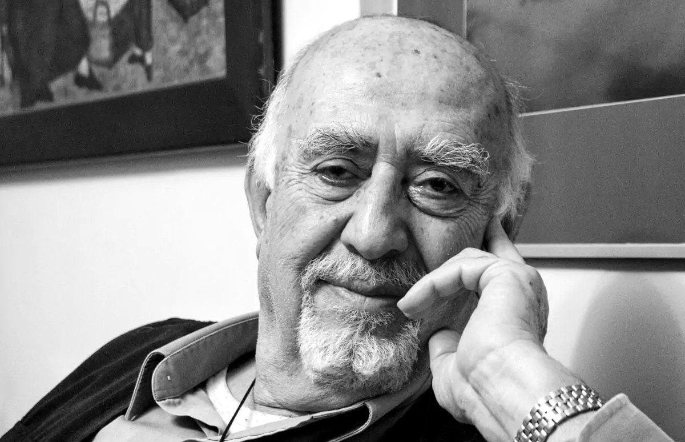

Sabit Kalfagil ve Fotoğrafın Düşünsel Yolculuğu

Türk fotoğraf sanatının gelişim sürecinde önemli bir yere sahip olan Sabit Kalfagil, yalnızca çektiği fotoğraflarla değil; eğitmenliği, yazarlığı ve fotoğraf kültürüne yaptığı katkılarla da iz bırakan isimlerden biridir. Özellikle belgesel fotoğraf alanındaki yaklaşımı ve fotoğraf felsefesine getirdiği yorumlar, onu Türkiye’de fotoğraf denince akla gelen öncü isimlerden biri haline getirmiştir.
Bu yazıda Sabit Kalfagil’in hayatını, sanatsal yaklaşımını ve Türk fotoğrafına bıraktığı mirası detaylı şekilde inceleyeceğiz.
Hayatı ve Eğitim Süreci
Sabit Kalfagil, 1934 yılında Elazığ’ın Keban ilçesinde dünyaya geldi. Çocukluk ve gençlik yıllarında sanata ve görsel anlatıma ilgi duyan Kalfagil’in fotoğrafla tanışması üniversite yıllarına uzanır.
Yükseköğrenimini İstanbul Üniversitesi İktisat Fakültesi’nde tamamladı. Ancak mesleki kariyerinin yönü, akademik eğitiminden çok fotoğrafa olan tutkusu tarafından belirlendi. Fotoğrafla kurduğu bağ zamanla profesyonel ve sanatsal bir kimliğe dönüştü.
Fotoğrafla Tanışması ve Sanatsal Gelişimi
Kalfagil’in fotoğraf yolculuğu 1950’li yılların sonunda başladı. Bu dönemde Türkiye’de fotoğraf henüz kurumsal anlamda yeni gelişiyordu. O, fotoğrafı yalnızca teknik bir uğraş olarak değil, güçlü bir anlatım dili olarak ele aldı.
Özellikle şu temalar üzerine yoğunlaştı:
- Belgesel fotoğraf
- İnsan ve yaşam temaları
- Anadolu kültürü
- Doğa ve çevre
Fotoğraflarında abartıdan uzak, sade ama derinlikli bir anlatım göze çarpar. Onun karelerinde “anı yakalamak”tan çok, anlamı yakalamak ön plandadır.
İFSAK ve Fotoğraf Eğitimine Katkıları
Sabit Kalfagil’in Türk fotoğrafına en büyük katkılarından biri eğitim alanında olmuştur. Uzun yıllar boyunca İFSAK (İstanbul Fotoğraf ve Sinema Amatörleri Derneği) bünyesinde eğitmenlik yaptı.
Bu süreçte:
- Temel fotoğraf eğitimleri verdi
- Atölye çalışmaları yürüttü
- Genç fotoğrafçıların yetişmesine katkı sağladı
- Fotoğraf eleştirisi kültürünün gelişmesine öncülük etti
Türkiye’de pek çok fotoğrafçı, onun derslerinden ve seminerlerinden geçerek yetişmiştir. Bu yönüyle Kalfagil, yalnızca bir sanatçı değil, aynı zamanda bir fotoğraf okulu gibidir.
Yazarlığı ve Kuramsal Çalışmaları
Sabit Kalfagil’i farklı kılan en önemli özelliklerden biri de fotoğraf üzerine düşünen ve yazan bir isim olmasıdır. Fotoğrafın sadece çekilmesi değil, okunması ve yorumlanması gerektiğini savunmuştur.
Başlıca eserleri arasında:
- Fotoğraf Sanatında Kompozisyon
- Fotoğrafın ABC’si
- Fotoğraf Sanatı Üzerine Denemeler
gibi kitaplar yer alır.
Bu kitaplar, Türkiye’de fotoğraf eğitimi alan pek çok kişi için temel başvuru kaynakları arasında kabul edilir. Özellikle kompozisyon konusundaki yaklaşımı, fotoğraf eğitiminde uzun yıllar referans olmuştur.
Fotoğraf Anlayışı ve Sanatsal Üslubu
Kalfagil’in fotoğraf yaklaşımını birkaç temel başlıkta özetlemek mümkündür:
- Sadelik ve Anlam: Onun fotoğraflarında teknik gösterişten çok içerik ön plandadır. Fotoğrafın izleyiciyle düşünsel bir bağ kurması gerektiğini savunur.
- Belgesel Duyarlılık: Türkiye’nin sosyal ve kültürel dokusunu belgeleyen çalışmaları, onu güçlü bir belgesel fotoğrafçı olarak konumlandırır.
- Kompozisyon Disiplini: Kalfagil’e göre iyi fotoğraf tesadüf değildir. Kadraj, denge, ışık ve ritim bilinçli şekilde kurulmalıdır. Bu yaklaşımı, eğitimlerinde de temel prensip olmuştur.
- Fotoğraf Felsefesi: Fotoğrafın yalnızca “güzel görüntü” üretmek olmadığını; bir düşünce, yorum ve bakış açısı içerdiğini vurgulamıştır.
Sergiler ve Uluslararası Çalışmalar
Sabit Kalfagil, Türkiye’de ve yurt dışında çok sayıda sergiye katıldı. Fotoğrafları ulusal ve uluslararası platformlarda ilgi gördü. Özellikle Anadolu insanını ve yaşamını konu alan çalışmaları, evrensel bir dil yakalaması bakımından dikkat çekicidir.
Ayrıca çeşitli fotoğraf federasyonları ve sanat kurumlarıyla da çalışmalar yürütmüş, Türkiye’nin fotoğraf alanındaki temsil gücüne katkıda bulunmuştur.
Türk Fotoğrafına Bıraktığı Miras
Sabit Kalfagil’in mirasını üç ana başlıkta toplamak mümkündür:
- Eğitmen kimliğiyle yetiştirdiği kuşaklar
- Fotoğraf kuramına yaptığı katkılar
- Belgesel fotoğraf alanındaki nitelikli üretimi
Bugün Türkiye’de fotoğrafla ciddi biçimde ilgilenen pek çok isim, doğrudan ya da dolaylı olarak onun düşüncelerinden etkilenmiştir.
Sonuç: Düşünen Fotoğrafın Öncüsü
Sabit Kalfagil, Türk fotoğraf tarihinde yalnızca iyi kareler üretmiş bir sanatçı değil; fotoğrafın düşünsel altyapısını güçlendiren bir aydın olarak öne çıkar. Onun yaklaşımı, fotoğrafın teknik bir uğraş olmanın ötesinde kültürel ve entelektüel bir ifade biçimi olduğunu hatırlatır.
Bugün fotoğrafla ilgilenen herkes için Kalfagil’in eserleri ve yazıları, hâlâ yol gösterici niteliğini korumaktadır. Türk fotoğrafının sessiz ama derin etkili ustalarından biri olarak adı, fotoğraf tarihimizde özel bir yerde durmaya devam etmektedir.